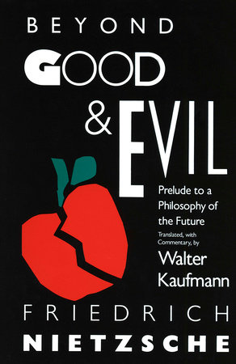

Book Reviews
The Name of the Wind
Patrick Rothfuss
This is the first book of a trilogy with the third book currently unreleased.
I found this book to be very interesting at parts.
It's a story of a man telling his life story. I like the parts of the book that take place during present time.
When he's telling his story. I liked the beginning and the end, but I was bored while he was at wizarding school. The University was surprisingly boring.
However, I think it was in a way deliberately boring. It was making the magic and the character more grounded.
Ultimately it picks up the pace at the end and I really liked how it ended.
I think I will buy the second book and read it.
Some of the writing is spectacular but I definitely got annoyed by the boring middle of the book so I will give it a 4/5.
4/5
1984
George Orwell

My favorite book
5/5
Beyond Good and Evil
Friedrich Nietzsche
My favorite philosophical book